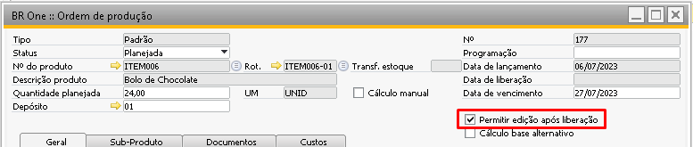
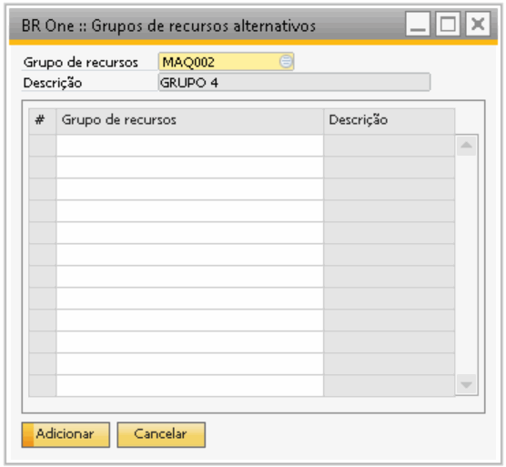
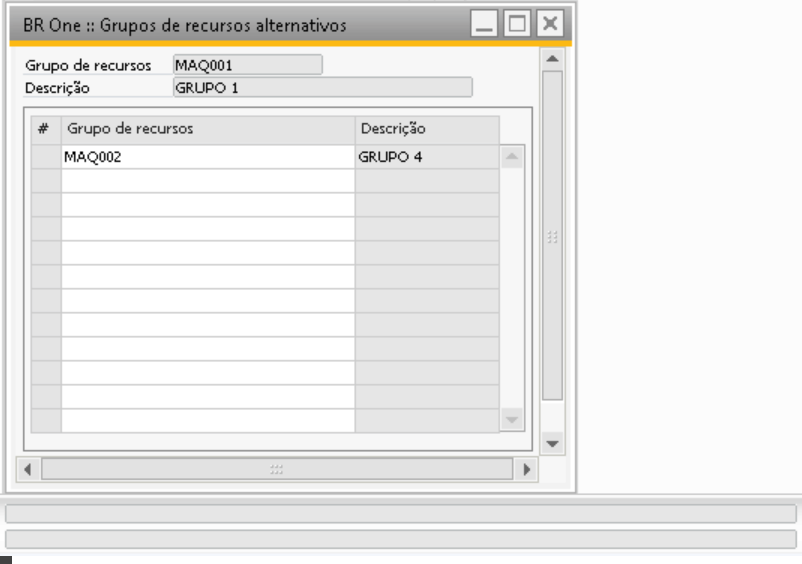

Grupos de recursos alternativos
A tela de grupos de recursos alternativos pode ser cadastrado vinculado a um grupo de recurso, ele é utilizado no momento do apontamento de produção e para iniciar produção. Na tela de apontamento somente aparecerá o grupo de recursos alternativo para ser apontado caso o parâmetro “Permitir edição após liberação” estiver selecionado, caso este parâmetro esteja desmarcado apenas o grupo de recursos principal ficará disponível.
{kind=link}
Grupos de recursos alternativos pode ser acessado pelo menu:
Produção > Grupos de recursos alternativos.
No cabeçalho da tela selecione um grupo de recursos no campo “Grupo de recursos” a descrição será preenchida automaticamente com a descrição do Grupo de recurso e para inserir um grupo de recursos alternativo é necessário inserir linha conforme a imagem abaixo:
{kind=link}
Após escolher o grupo de recursos clique em Adicionar.
Caso o usuário tente remover algum grupo de recursos alternativos que já tenha apontamento a mensagem abaixo será exibida impedindo a remoção.

BR One :: O Grupo de recurso alternativo possui apontamentos de produção e não pode ser removido.
{kind=link}
Segue uma simulação para entender o comportamento:
Na OP abaixo vimos que na operação 10 está inserido o grupo de recursos MAQ001.

Este grupo de recursos MAQ001 está vinculado a um grupo de recursos alternativos onde como alternativa para o grupo MAQ001 pode-se utilizar o grupo de recursos MAQ002.

Ao acessar a tela para realizar o apontamento de produção, caso o parâmetro “Permitir edição após liberação” estiver selecionado teremos os grupos de recursos que foram inseridos na OP e também será mostrado o Grupo de recuso alternativo, podendo ser apontado tempo para qualquer um dos dois grupos de recursos.

Caso o parâmetro “Permitir edição após liberação” estiver desmarcado os grupos de recursos alternativos não aparecerão para serem apontados.

Se o usuário selecionar um grupo de recursos que esteja cancelado na OP e clicar na seta para fazer um apontamento para ele, a seguinte mensagem será exibida:
{kind=link}
BR One :: O grupo de recursos ‘x’ está cancelado na OP. Selecione recursos dos grupos alternativos.
Na tela do terminal de apontamentos, opção iniciar também estará disponível a seleção do Grupo de recursos alternativos para iniciar/parar apontamento de produção.